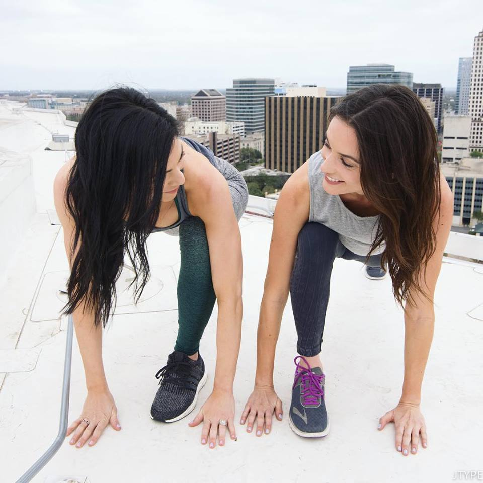

OUR PHILOSOPHY
First things first, we all need to shift our mindset
on the way we think about food. Food is what gives us
nourishment to take on the day and the energy to keep
us going. Food is also medicine; food helps our bodies
heal- that is the way we need to think about the food
that is going into our bodies. Contrary to popular
belief, the way in which your body functions is not just
calories in and calories out. If you consume 100 calories
of fibrous fruits and veggies versus 100 calories of chips,
your body will process and react completely different.
Think about how you feel after eating something fresh and
light versus something packaged and processed. BareNutrition
keeps it simple by focusing on eating natural and whole
foods. That's it.

WHY WE GOT STARTED
BareNutrition was born when its founders, Rachel Crockett
and Lauren Zambito, had enough of hearing the frustration
from clients, friends, and family who seemed constantly
confused with what they should be eating to be healthy.
Who wouldn't be confused in a world where we are constantly
surrounded by conflicting messages; eat low carb high protein,
don't eat sugar, dairy is good, dairy is bad, fat makes us fat,
fat makes us healthy. People are left not knowing if they
should eat paleo, vegan, gluten free, raw-- the options are
endless. Not to mention, packaged and processed foods and foods
with strange ingredients or advertised "health" claims don't
make things easier.